Iniciar un trámite (Web) — wizard 10 etapas
El asistente de creación de solicitud (wizard) le guía paso a paso desde la selección del trámite hasta el pago final, en 10 etapas estructuradas. Esta página recorre el flujo completo con un ejemplo concreto: «Renovación de Certificado para Conducir» (CON-2026-00001).
1. Acceder al wizard
Hay 3 formas de iniciar una nueva solicitud:
- Desde el panel principal → tarjeta «Nueva solicitud»
- Desde el menú lateral → «Solicitudes Servicios» → botón «Nueva solicitud»
- Desde el asistente IA → popover «Iniciar un trámite» → quick-start (Pasaporte, Conducir, Residencia, etc.)
2. Seleccionar el servicio
La pantalla muestra 6 categorías repliables (Identidad, Conducción, Contratos, Vehículos, Extranjería, Comercio) cada una con los servicios disponibles. Use la búsqueda en la parte superior si conoce el nombre del trámite.
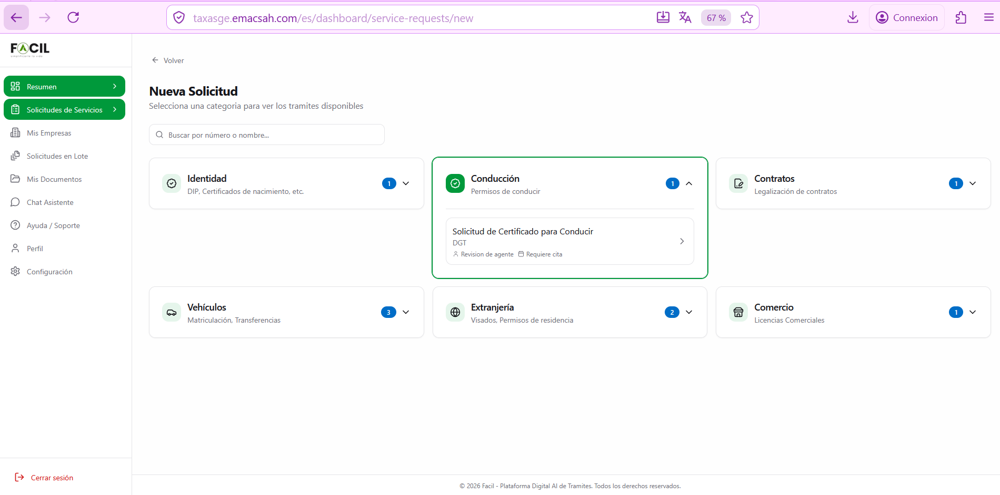
Para cada servicio, ve : el nombre completo, la entidad gestora (DGT, CNEDOGE, Tesoro, etc.), el modo de tratamiento (auto-validación o revisión por agente), y si requiere cita presencial. Pulse el servicio para iniciar el wizard.
3. Wizard — 10 etapas detalladas
El stepper horizontal en la parte superior indica su progreso. Un cronómetro en la cabecera (29:34 al inicio) limita la sesión a 30 minutos para proteger sus datos en caso de inactividad.
Etapa 1/10 — Tipo de Solicitud
Elija el tipo entre las opciones del trámite. Ejemplo Conducir : Primer Certificado (30 000 XAF), Canje Permiso Extranjero (35 000), Renovación (25 000), Duplicado (20 000), Extensión Clases (15 000). Cada opción muestra su tarifa.
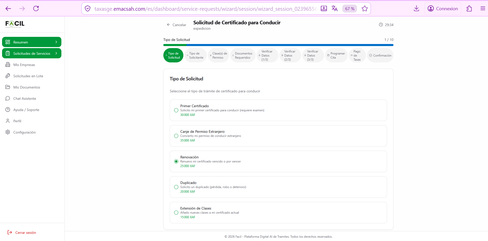
Etapa 2/10 — Tipo de Solicitante
Indique si es Ciudadano nacional (con DIP) o Residente Extranjero (con NIE). El sistema adapta los documentos requeridos según la elección.
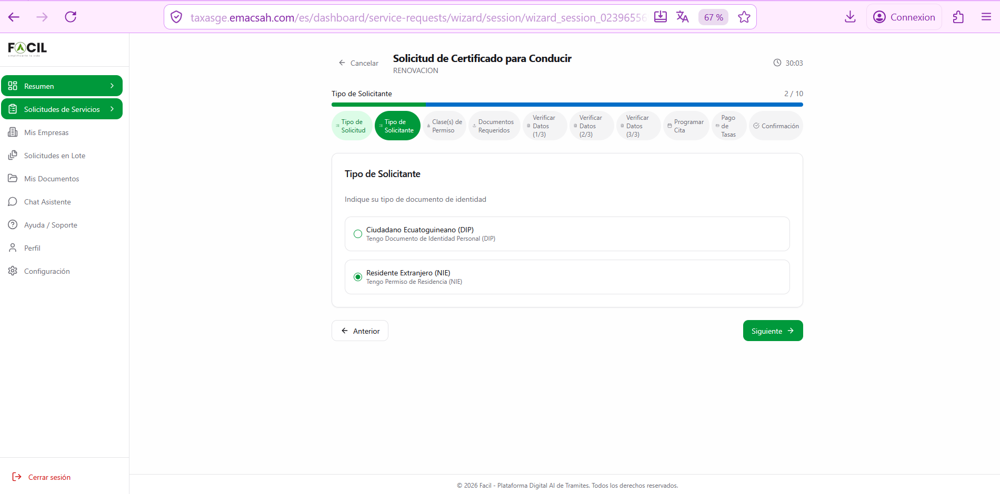
Etapa 3/10 — Clase(s) de Permiso
7 clases marcables (puede elegir varias) : A Motos, B Ligeros, B+ Remolque, C Camiones, D Autobuses, E Articulados, F Especiales. Cada clase indica la edad mínima.
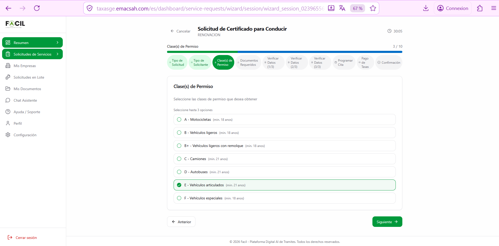
Etapa 4/10 — Documentos requeridos (subida + OCR)
Lista de los documentos a aportar según las elecciones anteriores. Puede arrastrar y soltar archivos (drag-drop) o pulsar para seleccionar. Cada documento subido pasa por OCR automática que extrae los datos clave con un porcentaje de confianza visible (ej. 77%, 87%, 100%).
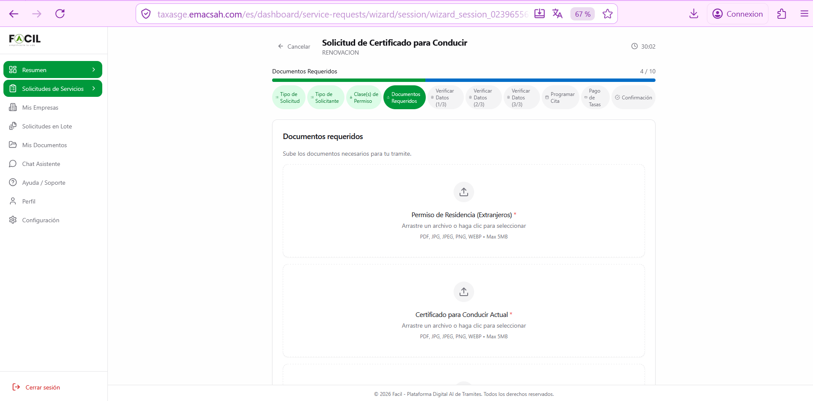
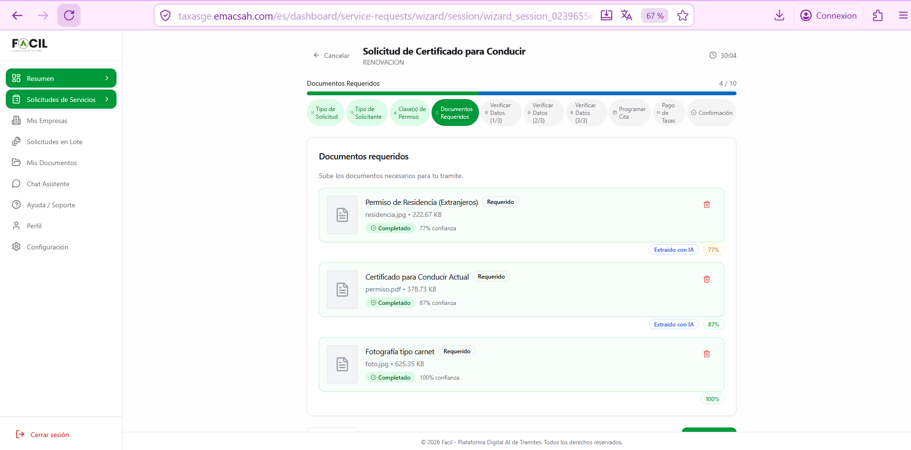
Etapas 5-7/10 — Verificar Datos (3 sub-pantallas)
El sistema muestra los datos extraídos por OCR agrupados en 3 sub-pantallas. Verifique cada campo. Los campos OCR son readonly — para modificarlos, regrese a la etapa 4 y reuploader el documento corregido.
- Etapa 5 — Datos Personales : NIE/DIP, nombre, apellidos, fecha de nacimiento, nacionalidad, dirección. Extraídos del documento de identidad.
- Etapa 6 — Datos de la Solicitud : tipo (Renovación), clases (E). Resumen de las elecciones de las etapas 1-3.
- Etapa 7 — Certificado Conducir Actual : número de registro, clases existentes, fecha de expedición, validez, antigüedad. Extraídos del certificado actual.
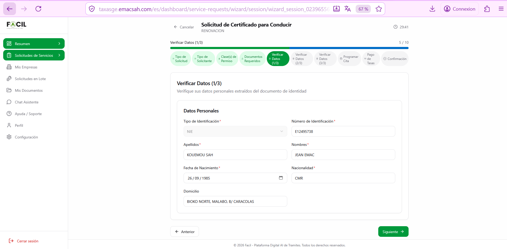
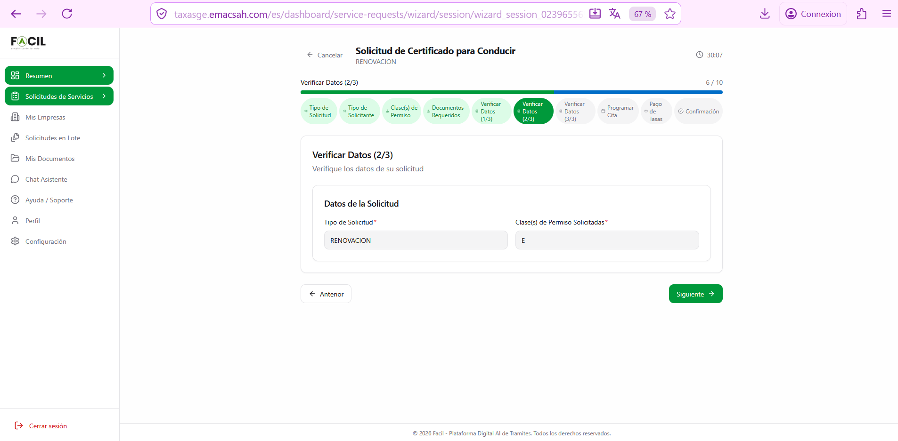
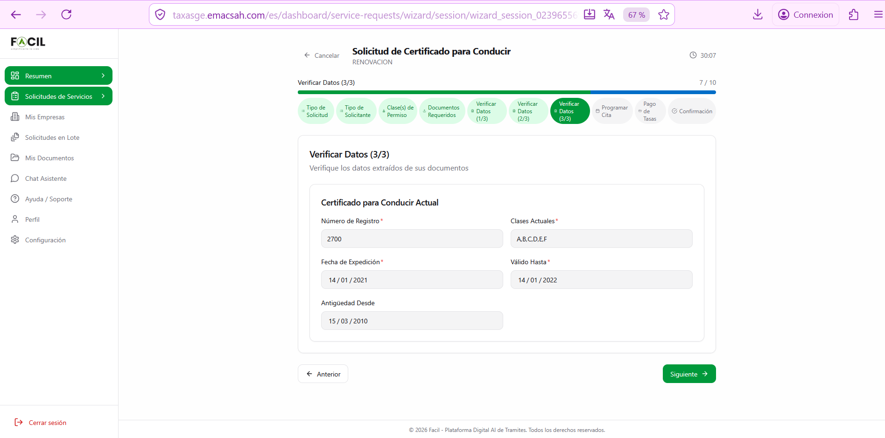
Etapa 8/10 — Programar Cita (3 sub-pantallas)
Si el trámite requiere una cita presencial (caso típico Conducir), 3 sub-pantallas se suceden para elegir la cita:
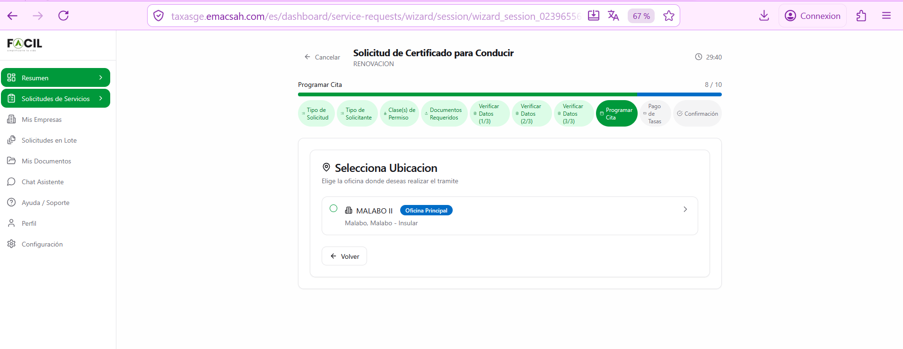
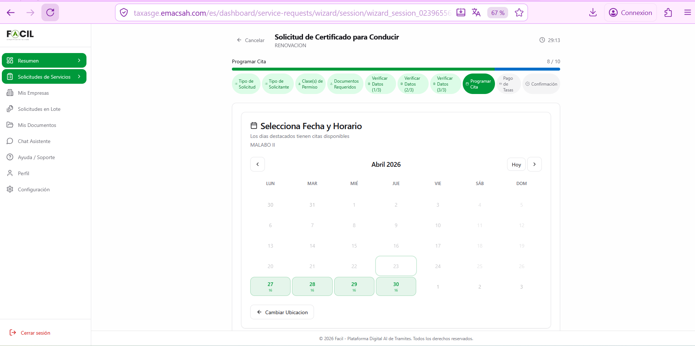
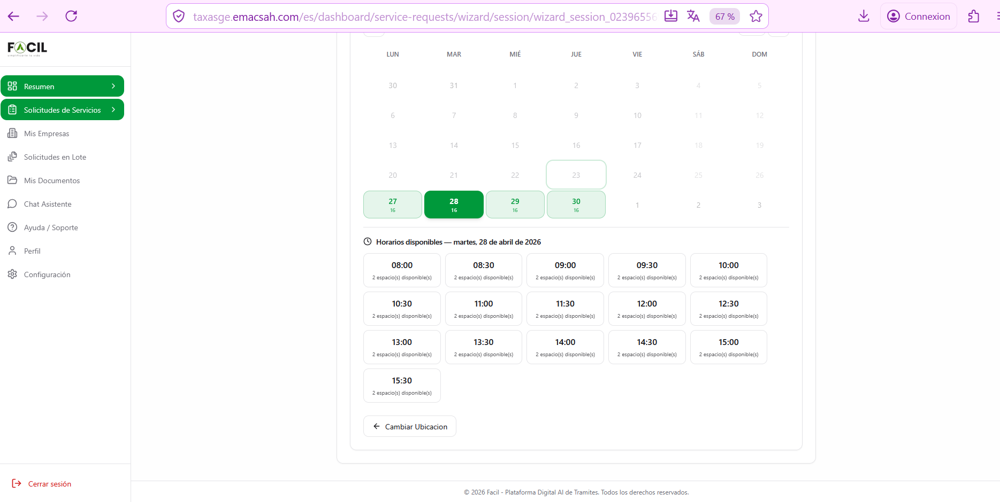
Etapa 9/10 — Pago de Tasas (5 métodos)
Pantalla de pago con 5 métodos disponibles. Total visible arriba (25 000 XAF en este ejemplo). Pulse un método para ver los campos correspondientes.
- Dinero Móvil : campo número de teléfono +240 — pago instantáneo
- Tarjeta : Visa/Mastercard, redirige a pasarela bancaria segura
- Transferencia bancaria : datos IBAN del Tesoro + referencia única
- Efectivo : seleccionar oficina del Tesoro Público — requiere validación de agente posterior
- Cheque : igual que efectivo, requiere validación de agente
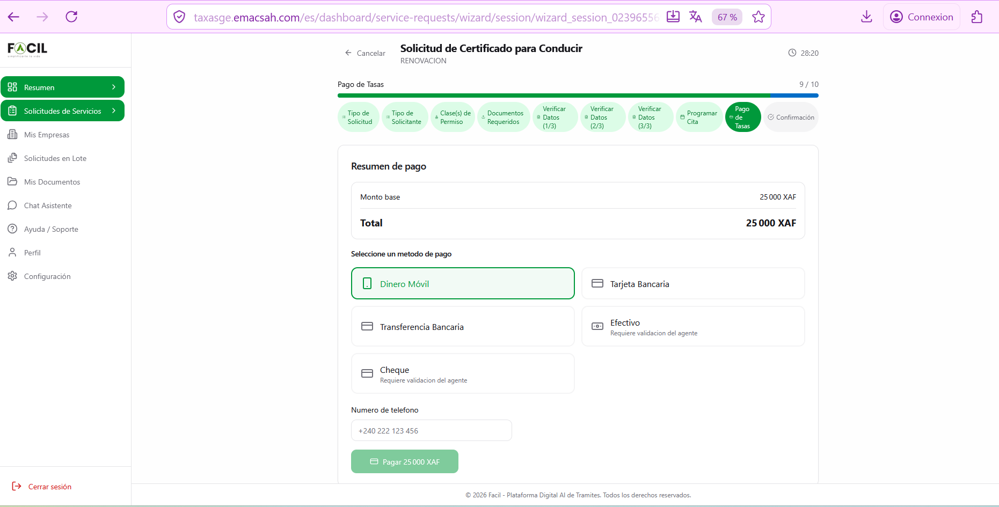
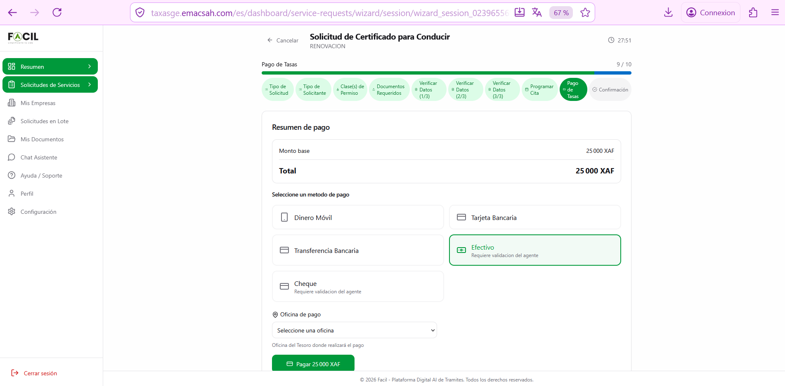
Etapa 10/10 — Confirmación
Pantalla final con el número de referencia de su solicitud (ej. CON-2026-00001), el estado actual («Solicitud registrada - Pago pendiente de validación» en el caso Efectivo), la cita programada, y 2 botones: «Descargar PDF» e «Imprimir».
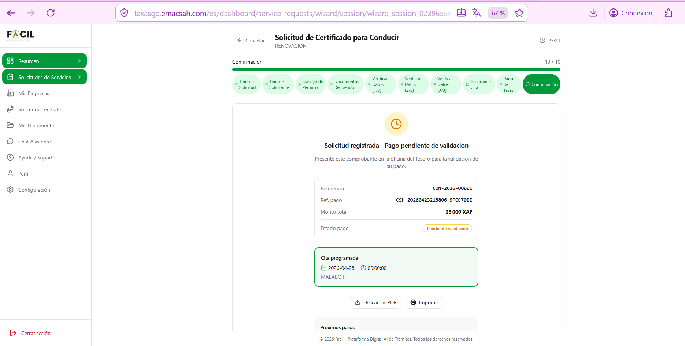
4. Después de la creación
Su solicitud aparece automáticamente en Mis solicitudes con un stepper horizontal que muestra el progreso (88% en este ejemplo : 8 etapas verdes / 1 azul activa «Pago de Tasas»).
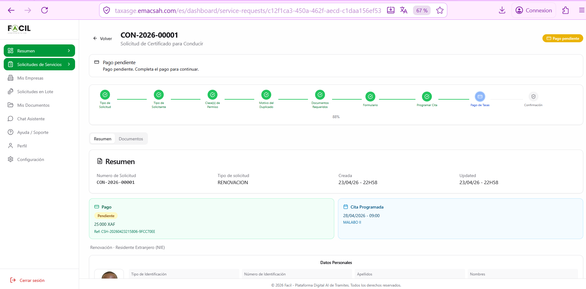
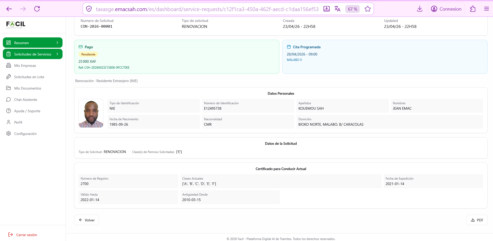
5. Documentos generados
El wizard genera automáticamente 2 documentos PDF:
- Resumen de la solicitud (ejemplo: solicitud_CON-2026-00001.pdf) : foto, datos personales, datos solicitud, certificado actual, cita programada, desglose pago, QR de verificación.
- Recibo de pago (después de validación) : número REC-2026-XXXXX, fecha, importe, método, pagador, código del trámite, QR de verificación pública.
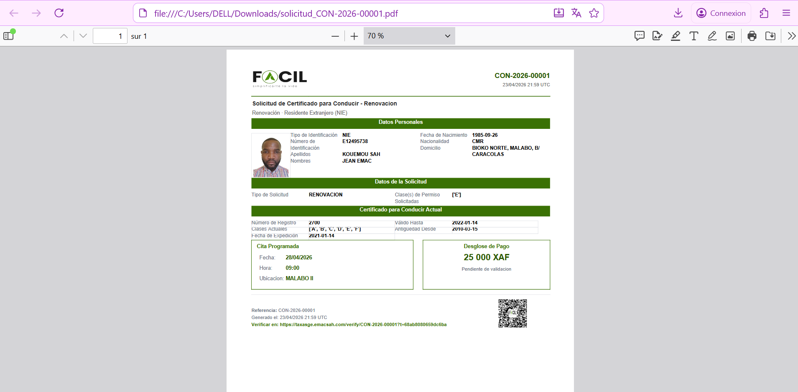
Verificación pública vía QR
Cada PDF lleva un QR enlazando a la página de verificación pública. Disponible en español y francés. Útil para presentar el documento a un tercero (banco, empleador, embajada).
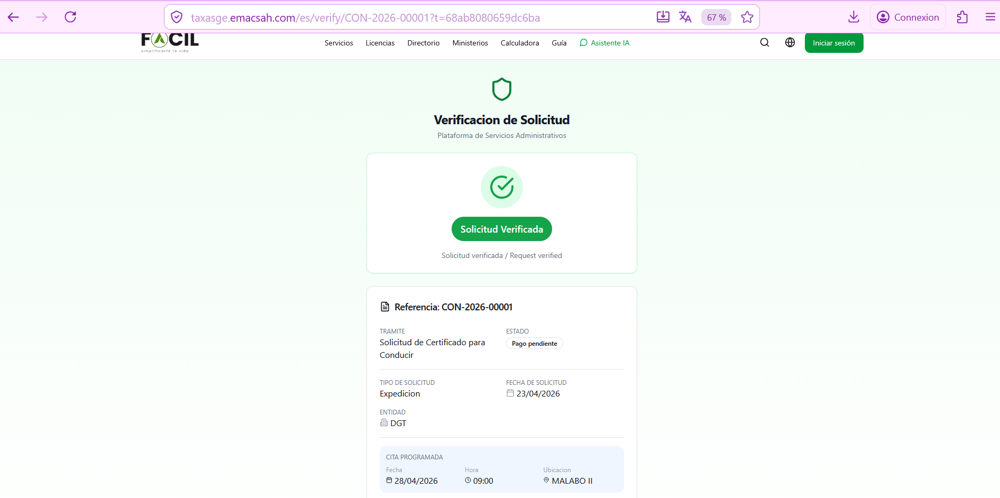
/es/verify/CON-2026-00001?t=...) — badge verde «Solicitud Verificada» con detalles ref/tipo/expedición/DGT/cita.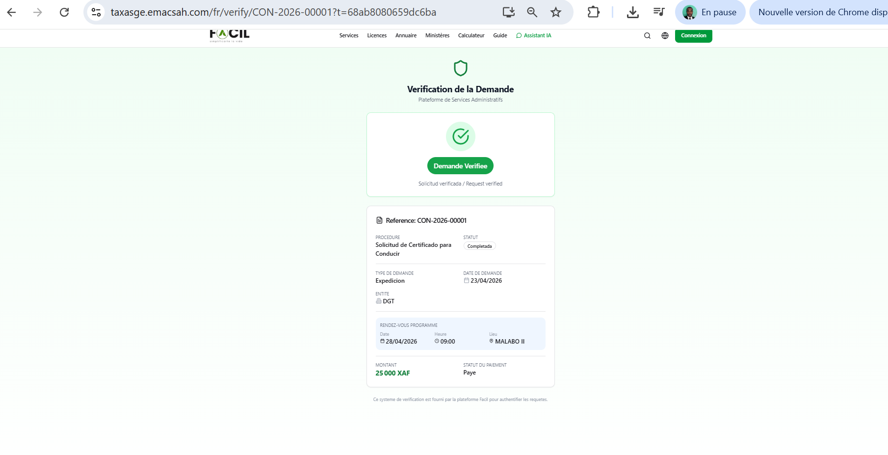
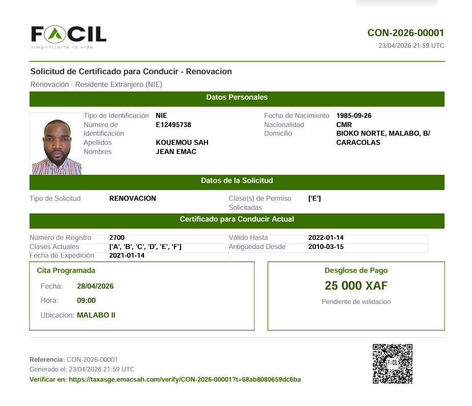
6. Diferencias Web vs Móvil
El wizard funciona de manera idéntica en ambas plataformas, con algunas diferencias UX:
| Aspecto | Web | Móvil |
|---|---|---|
| Stepper horizontal visible siempre | ✅ | ⚠ Compacto (icono ronde) |
| Subida de documentos | Drag-drop o selección archivos | Cámara directa o galería |
| Tiempo de sesión | 30 minutos | 30 minutos (renovado al volver al app) |
| Pago Dinero Móvil | Manual (introducir tel) | Auto-detección del SIM |
Para el detalle del wizard en versión móvil, consulte la página móvil dedicada.